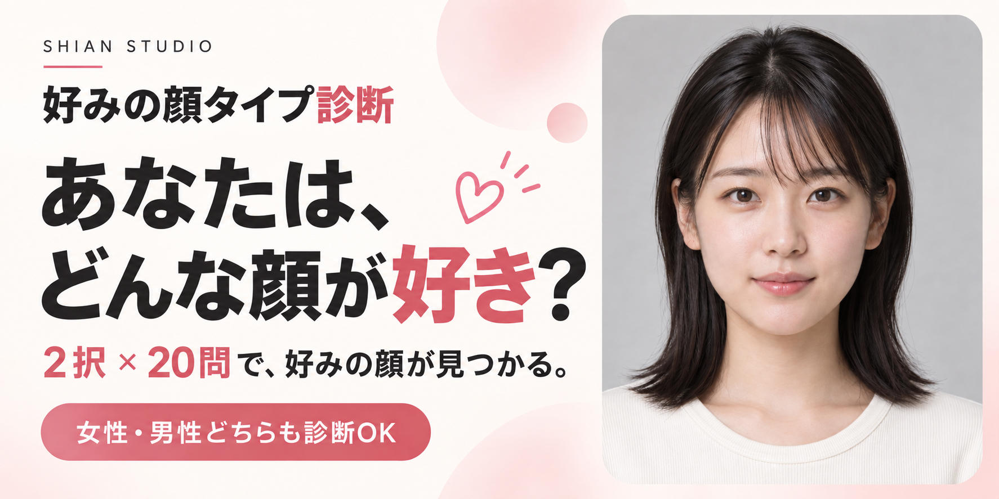

好みの顔タイプ診断 ／ サイトカード提案
その「好き」に、
少しだけ、謎を。
なんとなく惹かれる。その理由を、少し知りたくなる。
静かな好奇心から始まる、10の入り口。
01 / CONCEPT GALLERY
10通りの、気になる。
まずは 01・03・08 がおすすめ。
同じ女性写真で、見せ方だけを比較できます。
10案 / 20枚画像をクリックで拡大・PNG保存
お気に入りはまだありません。各案の「保存」で、あとから絞り込めます。
写真は診断に使っている架空の成人女性の生成画像（female_011）。
全カードに同じ素材を使用。顔写真は診断素材の例です。
以前のサイトカードと比べる

今回の見立て：強い太字、ピンクの装飾、ボタン風の帯、正面の顔写真が同時に目立ち、広告を連想しやすい構成。新案では、文字の強弱と余白で視線を整理します。
02 / A THREE-LETTER IDEA
「私は、RSQが好き。」
3つの軸 × それぞれ2通り = 8タイプ。
覚えやすい3文字と、言いたくなる名前をセットに。表すのは「惹かれる顔の印象」です。
軸を選ぶと、結果例が変わります
これは組み合わせのプレビューです。性格や相性を測る診断ではなく、顔の好みを伝える独自の呼び名の案です。MBTIとは別のものです。
私が惹かれるのは
余韻のある顔
好みの顔タイプ診断 / 結果表示案現在の8タイプとの対応と、採用時の考え方
既存の女性8分類は、もともと3つの二択で作った分類ではありません。以下は表示上の仮対応で、顔立ちとして正しい対応が確認できたわけではありません。特に女性のフレッシュ、クールカジュアル、エレガントと新しい軸の整合性は、男女各40枚を見直して確かめる必要があります。
| 提案コード | 女性の現分類（仮対応） | 男性の現分類（仮対応） |
|---|
採用するなら、まず写真と3軸の対応を見直し、確定したタイプIDに表示コードを持たせます。採点は現在どおり「選んだ顔のタイプに1票」。3軸を別々に多数決すると現在と違う結果が出るため、表示コードの追加と採点変更は別の判断です。同点の抽選・結果保存も維持できます。年齢は全員25歳のまま、印象の差に年齢差を使いません。
07・08・10 のカードと投稿文は、3文字コードを導入した場合の先行案です。現在は3文字コードと文字別の割合を診断結果に表示しています。
03 / RESEARCH NOTES
話題の診断は、何を見せている？
実際のトップページのOGP画像を確認した5事例。
「人気の根拠」「観察できたこと」「今回に活かす解釈」を分けて記録しました。
言葉にできる結果
文字コード、愛称、ハッシュタグ。
「自分はこれ」と伝えられる単位を作る。
見せたくなる一枚
キャラクター、免許証、一覧。
結果を持ち帰れる形が参考になる。
入口と結果を分ける
入口では気になる問い。
結果ではコードと名前をはっきり見せる。
上の3点は事例からの制作上の解釈です。カード別のクリック率・拡散率は確認できていません。謎めいた表現や写真の有無による効果を保証するものではありません。
今回の候補にどう反映したか
01・02・05・09 は余白と象徴で好奇心を作る案。03・04・06 は日常の言葉で自然に誘う案。07・08・10 は結果のコードや一覧を、会話のきっかけにする案です。写真なしでも「顔タイプ診断」を読み取れるようにし、写真ありでは写真と問いのどちらを主役にするかを変えています。
現在のOGPを確認した調査であり、流行当時と同じ画像だったかは未確認です。掲載数値は各サービスや調査主体の発表で、OGP自体の効果を示す数字ではありません。参照画像は各公式サイトから読み込むため、オフラインや先方の変更時には表示されない場合があります。
調査メモと出典を読む ↗